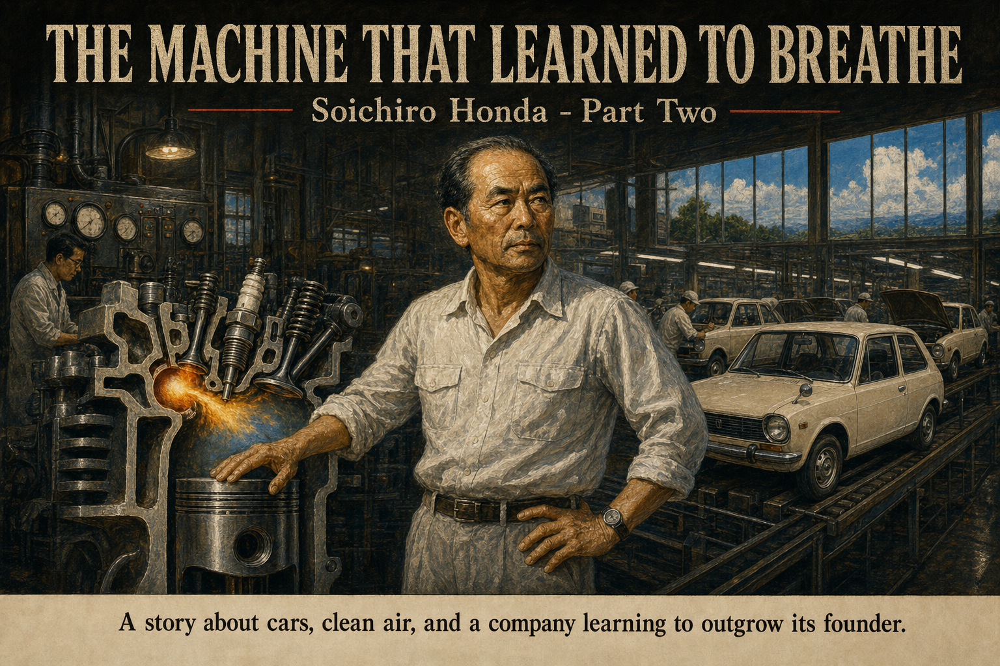
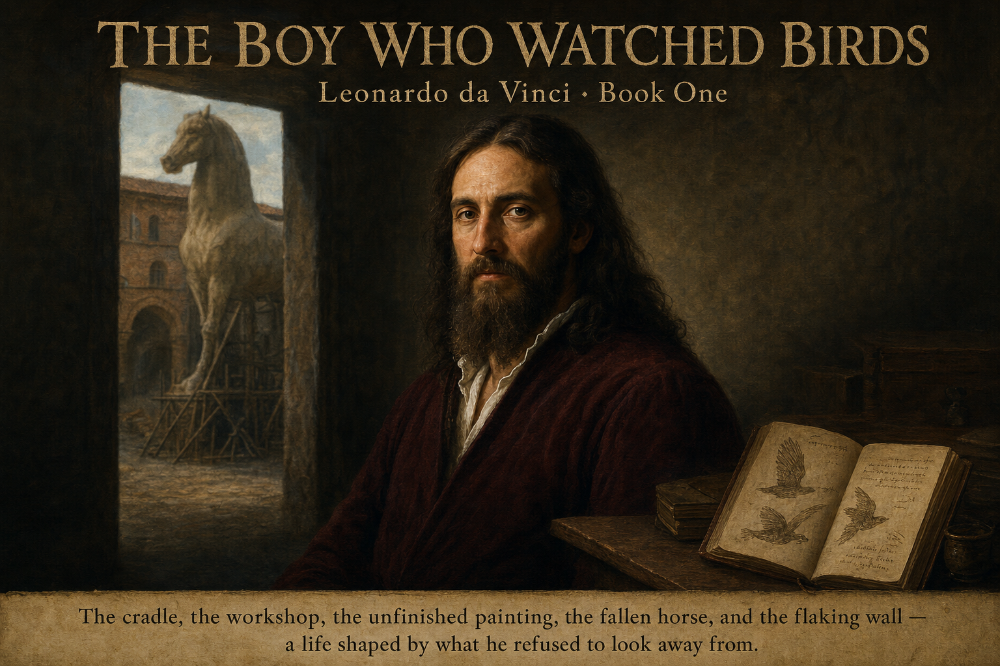
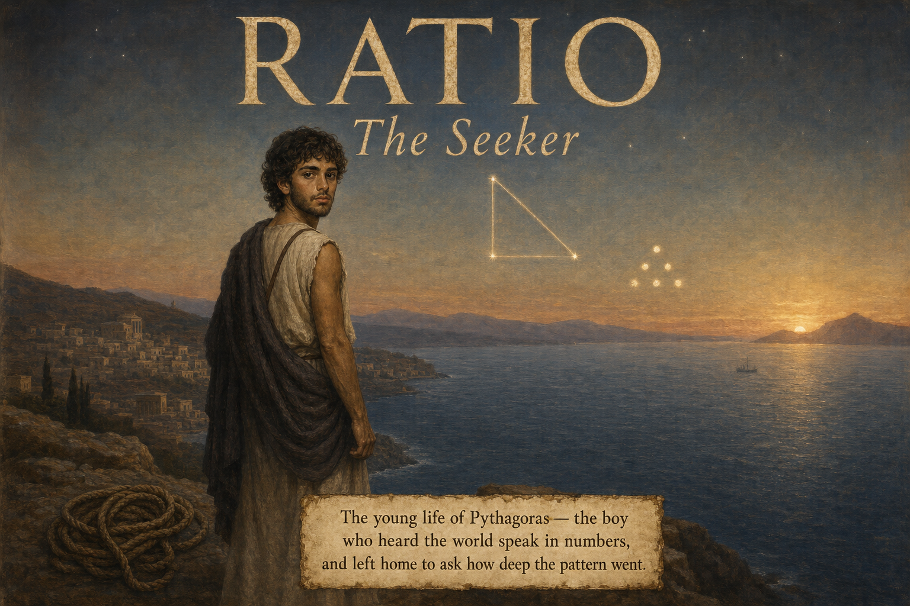
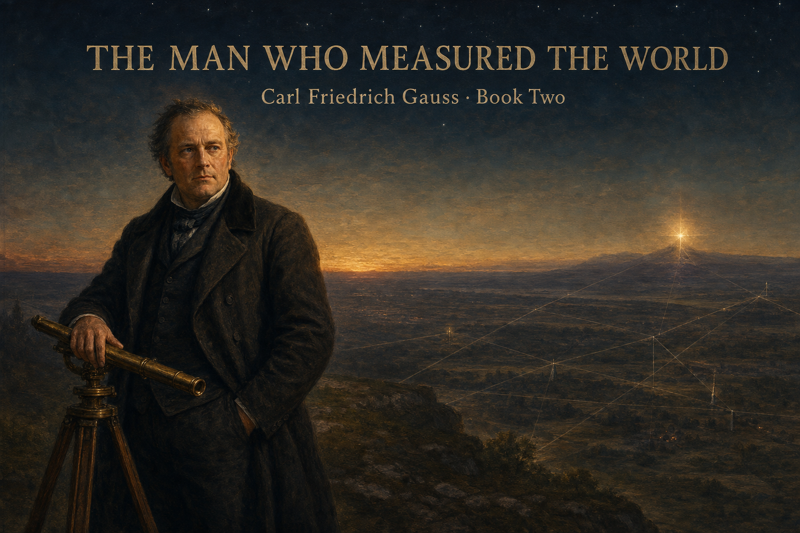
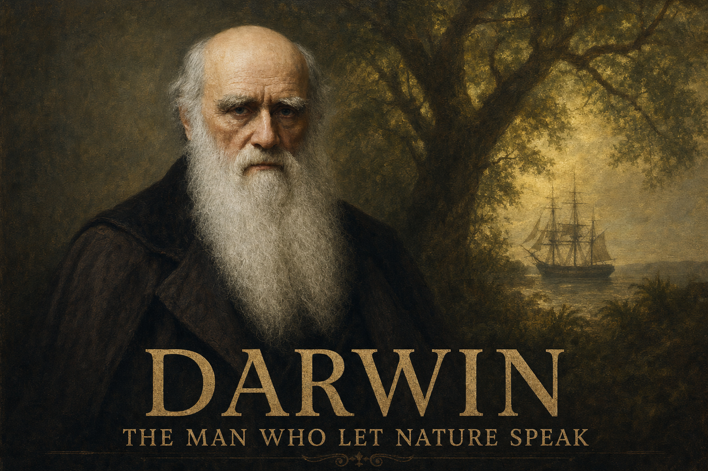
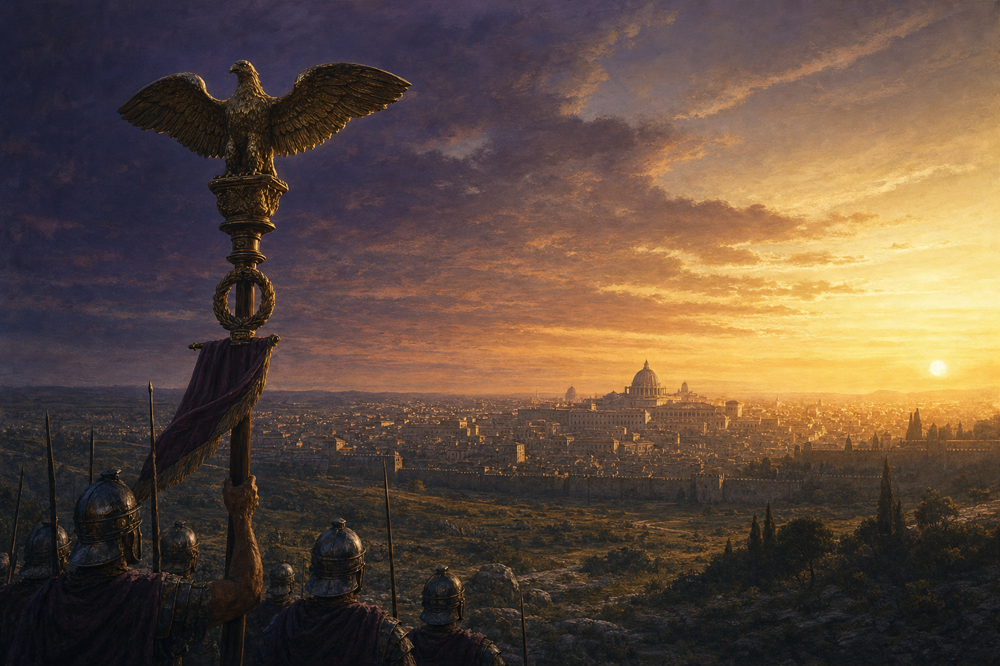

The View From Above
Read →A moment of humiliation becomes a lesson in scale, time, and perspective.

The Orchard of Small Things
Read →A restless boy learns how patience, repair, and repetition become a kind of strength.

Salt and Stone
Read →A Greek boy loses everything to war, washes ashore in a foreign land, and rebuilds his life through the craft his father taught him.

Salt and Stone — Life Two
Read →Five years later, the boy is a young man — conscripted into the Persian fleet, fighting against the country of his birth at the Battle of Salamis.

Salt and Stone — Life Three
Read →Shipwrecked for the third time, Nikos washes ashore in a world without cities or ships — and discovers that who he is without any of it might be enough.

Salt and Stone — Life Four
Read →Six years on the steppe, Nikos has a son who asks about the sea. When Greek traders arrive from the south, he must decide what to pass on — and what to let go.

The Lantern and the Sword
Read →A lantern-maker's son dreams of forging swords — until a wounded samurai shows him that light can be braver than steel.

The Boy Who Mapped the Wind
Read →An overconfident young navigator learns that the ocean is always speaking — if you know how to listen.

The House of Atreus — Vol. 1
Read →A father serves his son to the gods. A champion betrays the man who helped him win. Two brothers tear a kingdom apart. Three generations, three curses, one bloodline.

The Shock of Florence
Read →A French ambassador rides south expecting a city of merchants. What he finds rewrites everything he knows about what humans can build.

The House of Atreus — Vol. 2
Read →A king sacrifices his daughter for war. A queen waits ten years for revenge. A son must choose between divine law and his own mother. The cycle of blood ends — not by a sword, but by a vote.

The Trial of Socrates
Read →A potter's son watches Athens put its wisest man on trial. When Socrates refuses to save himself, the boy must reckon with what it means to believe something enough to die for it.

The Builders
Read →A Roman boy and a Persian girl face the same problem — a city that needs water — a thousand years and a thousand miles apart. Two solutions. Same physics. Same patience.

Cogito: The Life of René Descartes
Read →A sickly boy who was allowed to stay in bed became the man who unified geometry and algebra, stripped away every certainty until only three words survived, and was killed by the cold when a queen forced him out of bed at five in the morning.

Relativity: The Life of Albert Einstein
Read →A five-year-old is handed a brass compass and never gets over the mystery of the needle. Forty years later, working alone in a patent office, he discovers that time itself can bend — and the world never looks the same again.

The Invisible Forces: Isaac Newton, Book One
Read →A fragile baby nobody expected to live grows into the silent man who shuts himself in a plague-year farmhouse and, in eighteen months alone, invents calculus, splits white light into its hidden colors, and realizes that the same force that drops an apple holds the moon in the sky.
The Boy Who Chased Engines
Read →A village boy chases a rattling automobile down a dirt road in 1914 and never stops. Fifty years later, his small motorcycles are sold and ridden across Japan, Europe, and America by people who had never owned a motor before. A story about failure, machines, and ordinary people moving farther than they could before.

The Machine That Learned to Breathe
Read →Honda's motorcycles had crossed oceans. Cars were harder. The second volume follows the move into automobiles, the air-cooled 1300's hard lesson, the CVCC breakthrough, and the moment Honda and Fujisawa let the next generation carry the answer.

The Boy Who Watched Birds
Read →A peasant woman's son, barred by birth from the careers of Florence, teaches himself to read the world directly — and ends up reading it more carefully than anyone in Europe. Book One ends in 1499 with the Sforza horse shot to pieces by French archers and the Last Supper already flaking on its wall. Leonardo leaves Milan with two saddlebags of notebooks and the discipline that made them.

The Invisible Forces: Isaac Newton, Book Two
Read →The same mind that solved gravity in his thirties spent his sixties hunting counterfeiters through London taverns, ran the Royal Society like a kingdom, refused to publish the book that would humiliate his dead enemy, and outlived every rival who had ever crossed him. Book Two follows Newton from the exhaustion that followed the Principia through the Mint years, the long war with Leibniz, the private nights of alchemy and prophecy at Kensington, and his burial at Westminster Abbey.
The Name of the Rose: Book One
Read →A Franciscan friar with riveted-leather spectacles and his teenage novice ride up to a Benedictine abbey in the Italian Alps in the winter of 1327. They are there because the Pope and the Franciscans are about to argue, inside that abbey, over whether Christ owned his own clothes. They find the abbey already in panic: a monk has fallen from the tower in the night, and four days later three more brothers will be dead, each with the same black stain on their fingertips. Adapted from Umberto Eco's novel, Book One covers the first four days — the riddle, the forbidden library, and the arrival of Bernard Gui's inquisitorial tribunal.
The Name of the Rose: Book Two
Read →The final three days at the abbey bring the poverty debate into the chapter house, Bernard Gui's tribunal to its sentence, and William's search through the labyrinth to the room called the finis Africae. Book Two follows the poisoned book to Aristotle's lost work on comedy, Jorge's secret guardianship of the library, the fire that destroys the Aedificium, and old Adso's return to the ruins decades later.

Ratio: The Seeker (Volume One)
Read →A gem-cutter's son on the Greek island of Samos hears the world speak in numbers — hammers that ring in whole tones, stars that move by counting — and cannot stop asking why. At about twenty he leaves home and crosses the known world looking for the answer: to Egypt, where the rope-stretchers make a perfect square corner with a rope knotted three, four, five but cannot say why it works; to Babylon, where the Magi have charted the number-sky for a thousand years but cannot say why either. He comes home a greyer man with the same unanswered question, and an island too small to hold it — then sails west to a young city called Croton to build the place where it can finally be answered. The true history of Pythagoras is mostly legend, and the book says so; Volume One plants the 3-4-5 rope that Volume Two pays off as the famous theorem.
Sky Duel: How Fighter Jet Weapons Actually Work
Read →An illustrated tech explainer that opens in the middle of a dogfight and then takes the whole machine apart. How does a missile see heat? How does it steer toward a jet that is turning away at the speed of sound? Inside: the desert engineers at China Lake who built the first Sidewinder out of spare parts, the spinning-mirror eye that finds a hot engine against a cold sky, the collision-course rule that guides the chase, and the seventy-year arms race that followed — flares, smarter seekers, radar missiles, and stealth. Ends with a five-question quiz that asks why, not what.
Scattergun: How Shotguns Actually Work
Read →An illustrated tech explainer that opens with a clay disc shattering over a dawn trap field and then takes the whole machine apart. Why throw a cloud of pellets instead of one bullet? Inside: the shell as a tiny one-shot factory, the three-thousandths-of-a-second journey from primer to muzzle, the choke that shapes the cloud like a pinched garden hose, the strange medieval ruler behind “12-gauge,” and John Browning — the gunsmith’s boy from Ogden, Utah — whose pump-action and self-loading Humpback taught the gun to reload itself. Nothing living gets shot; the targets are clay, glass, and paper. Ends with a five-question quiz that asks why, not what.
The Boy Who Chose Numbers: Carl Friedrich Gauss, Book One
Read →A poor boy born in Brunswick in 1777 could not stop counting — the story goes that he corrected his father’s wage sums at three, and as a schoolboy added every number from 1 to 100 in seconds by pairing them into fifty 101s. A duke paid for his schooling, and at university the boy found himself torn between two lives: the glowing world of languages and the dull-looking world of mathematics. Then one morning in March 1796 he drew, with only compass and straightedge, a perfect seventeen-sided shape — the first new one in two thousand years — and let that single proof choose his life. The book ends in 1801, when the young man found a lost planet with nothing but arithmetic and became famous across Europe. Two things in here you can do on paper yourself: the pairing trick and the compass constructions the Greeks began.

The Man Who Measured the World: Carl Friedrich Gauss, Book Two
Read →Book One’s boy chose numbers over words; Book Two’s man aims those numbers at everything he can reach. He finds a lost planet with pure calculation, then loses his patron, his wife Johanna, and their infant son — and keeps measuring, because measuring is how he holds on. He covers the whole Kingdom of Hanover in a net of triangles, invents a mirror that flashes sunlight between mountains, proves that a curved surface’s shape is built into it, and with the young physicist Wilhelm Weber sends the first words down an electric wire strung over the rooftops of Göttingen. The thing you can do on paper yourself: triangulation — measure a distance you could never walk to, using one baseline and two angles, a ruler and a protractor. His name still rides on the world’s instruments: the unit of magnetism is the gauss.
The Gun That Aims Itself: How Machines Learned to Shoot Down Drones
Read →An illustrated tech explainer that opens at three in the morning, when a turret snaps around on its own, finds a drone in the dark, and fires — one second, nobody pulled the trigger — and then takes the whole machine apart. Why can a drone costing a few hundred dollars destroy a tank worth three million, and why can no human guard keep up? Inside: how the machine SEES with radar, cameras, thermal, and sound, and why it needs all of them against something so small; how a computer tells a drone from a bird or an airliner; why you point where the drone is going to be, not where it is; the five ways to stop a drone — jam, net, laser, interceptor, gun; the Phalanx and the border sentry guns that have done this for forty years; and the whole kill chain, finished faster than you can say it. The target is always a drone, never a person. Ends with a five-question quiz that asks why, not what.
The Iron Triangle: How a Tank Does Three Impossible Things at Once
Read →An illustrated tech explainer built around one idea: a tank is asked to do three things that fight each other — hit hard, survive being hit, and move fast — and you can never win all three at once. Every tank is a careful compromise inside that iron triangle. Inside: the smoothbore gun that throws a shell flat and fast; the two ways through steel — the kinetic dart and the shaped-charge jet; the computer that leads the shot a hundred times a second so the tank can hit while bouncing over rough ground; the three tricks of armor — slope it, layer it, space it; the arms race from reactive-armor bricks to active protection that shoots an incoming rocket out of the air; the engine and wide tracks that let sixty tonnes cross mud a truck would sink in; the crew of four in a steel box; the first tanks crawling onto the Somme in 1916; and the cheap drone that now hunts the giant from above. Machines only, no casualties. Ends with a five-question quiz that asks why, not what.
Tesla: The Man Who Gave the World Its Power
Read →A biographical graphic novel about Nikola Tesla — not a parade of inventions, but the story of what he gave away. A priest's son who nearly died of fever sees a whole machine in a flash of sunset light: a current that rushes back and forth and makes a magnetic field that spins a motor with no sparks at all. It becomes the alternating current that still runs every wall socket and every motor on earth. He could have been one of the richest men alive — instead he tears up the royalty contract to save the one man who believed in him, chases an even bigger dream of free power for everyone, and loses everything. He dies alone in a New York hotel room, feeding a white pigeon, certain the future will prove him right. It did. Inside: the AC idea drawn in the dirt of a Budapest park; the War of the Currents; Niagara Falls lighting a distant city; man-made lightning at Colorado Springs; the great tower that failed; and a unit of science that now carries his name. Ends with a five-question quiz that asks why, not what.

Darwin: The Man Who Let Nature Speak
Read →A biographical graphic novel about Charles Darwin — not a lightning-bolt of genius, but one of the great turns in the history of thought: the patience to let the evidence of living things declare its own logic, instead of imposing a design on nature. A quiet boy who cared for nothing but beetles sails on HMS Beagle and comes home with crates of fossils and birds. He has no epiphany on the Galápagos — the famous finches tell him nothing yet. The pattern only emerges when an expert, John Gould, reads the specimens carefully back in London. Darwin draws a small branching tree in a notebook above two cautious words, “I think”; finds the engine of natural selection in a book about populations; and then waits twenty years, gathering evidence until the conclusion is almost impossible to deny — getting it right mattering more to him than getting it first. A letter from Alfred Russel Wallace, who reached the same idea alone in a jungle hut, proves it was there in the facts all along. Inside: the Beagle, the lifted Andean coast, eight years of barnacles, the joint reading at the Linnean Society, the sold-out Origin of Species, and the Tree of Life that holds all of it. Ends with a five-question quiz that asks why, not what.
Mendel: The Monk Who Counted
Read →A biographical graphic novel about Gregor Mendel — the companion to Darwin, and the mechanism hidden inside his pattern. A poor farmer’s son who learned to graft fruit trees half-starves his way through school, becomes an Augustinian friar, and discovers he is no good at comforting the dying — so his abbot sends him to teach and to learn. In Vienna the physicist Doppler teaches him the one thing that will change everything: that nature can be counted. Back in the monastery garden he does what no naturalist had the patience for — he breeds garden peas by the thousand, spends two years just making pure lines, and counts every plant. The blending idea of heredity breaks on its first day: a tall pea crossed with a short one gives all-tall children, and the shortness vanishes… then returns in exactly one of four. 5,474 round peas to 1,850 wrinkled — always close to three to one. Mendel had found the hidden “factors” we now call genes, and turned the deepest mystery of life into arithmetic. He reads Darwin and holds the exact answer Darwin’s tree is missing; he reads his paper to a polite, uncomprehending room in 1865; and the work sits ignored for thirty-four years until, sixteen years after his death, three botanists rediscover it and find the monk got there first. Ends with a five-question quiz that asks why, not what.

The Pea Square: How to Predict a Living Thing
Read →An illustrated explainer — the companion to the Mendel biography. The biography ended on a mystery: Mendel bred peas by the thousand and the same odd number kept coming back, three tall plants for every short one. This book builds the little machine that answers it. Drawn as a naturalist’s notebook opened up — pea vines in ink and watercolour, factor tiles as hand-cut cards, the Punnett square hand-ruled in pencil — it adds exactly one idea per page and lets you fill in the next grid yourself. The factor that comes in pairs; the dominant version that shows and the recessive one that hides; pure lines crossed until the short trait vanishes, then returns. Then the grid itself: four equally-likely boxes where the 3 : 1 falls straight out of the arithmetic, the hidden 1 : 2 : 1 underneath it, probability as nothing more than counting coin-flips, the test cross that reads a hidden factor, and — scaled up to a 4×4 — the 9 : 3 : 3 : 1 for two traits at once. It stays honest: a page on the snapdragons that blend red and white into pink, where Mendel’s clean either/or rules bend. No cells, no DNA — just the arithmetic a child can re-enact with paper, pencil, and two coins. Ends with a six-question quiz that asks why, not what.
Why Rome Kept Winning
Read →An illustrated essay that takes a claim everyone repeats — that Rome conquered the ancient world because its army was uniquely organized — and tests it honestly. The discipline was real: every single night on the march, Roman soldiers stopped early to dig a fortified camp with a ditch, a rampart, and gridded streets, then tore it down at dawn and did it again. But organization wasn’t Rome’s secret, because it wasn’t unique — Assyria, Macedon, and Qin China all built disciplined, drilled armies too, and several of them were more orderly than Rome. So why did Rome win? The real answer is three things its rivals didn’t have together: a vast reservoir of manpower drawn from dozens of Italian allies (the socii, who supplied roughly half of every Roman army); an almost inhuman refusal to quit — after Hannibal annihilated eight legions in a single afternoon at Cannae, killing more men in one day than almost any battle in history, Rome simply raised new armies and kept fighting; and a habit of stealing whatever worked, copying the Spanish sword, the Carthaginian warship, and the manipular formation from the enemies who beat them. Built as text accompanied by museum-quality painted reconstructions and antique tactical maps, it ends with a four-pillar synthesis — Discipline, Manpower, Resilience, Adaptation — and a five-question quiz that asks why, not what.

How Rome Became the World
Read →The direct sequel to Why Rome Kept Winning, and the harder question it leaves behind: a machine built to lose battles and still win wars — how does a thing like that ever stop? Not, it turns out, the way most people half-remember it. There was no single day when barbarians smashed the gates and Rome was gone. This is the honest story instead: each of the four strengths that made Rome unbeatable, followed across six centuries, became the very thing that transformed it. The allies who supplied half its armies demanded to be Rome — and a war to deny them ended by making all Italy Roman. The professional army grew loyal to the generals who paid it, not the Republic — and Caesar crossed the Rubicon. The throne became the deadliest prize in the world, and for fifty years Romans murdered Romans to hold it. And Rome’s old genius for absorbing outsiders took in whole armed nations, until the newcomers inherited the West. Then the famous “fall” of 476 turns out to be a man quietly deciding the title wasn’t worth filling and putting the crown in a box — while the eastern half went on calling itself Roman for another thousand years, to 1453. Told as text with museum-quality painted reconstructions and antique maps, with a four-pillar synthesis and a five-question quiz that asks why, not what.